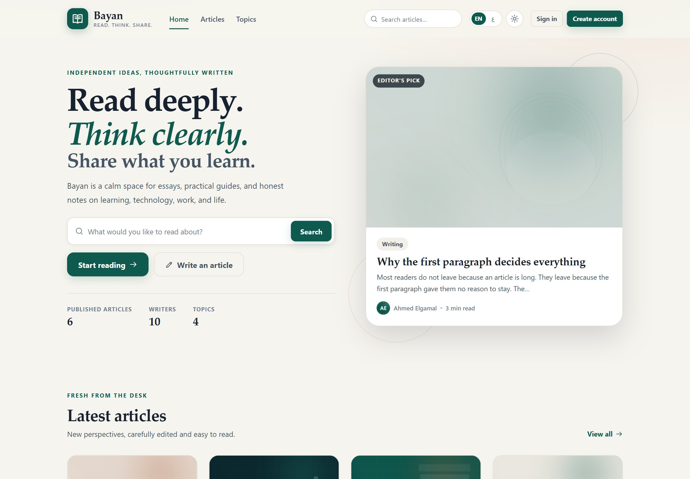
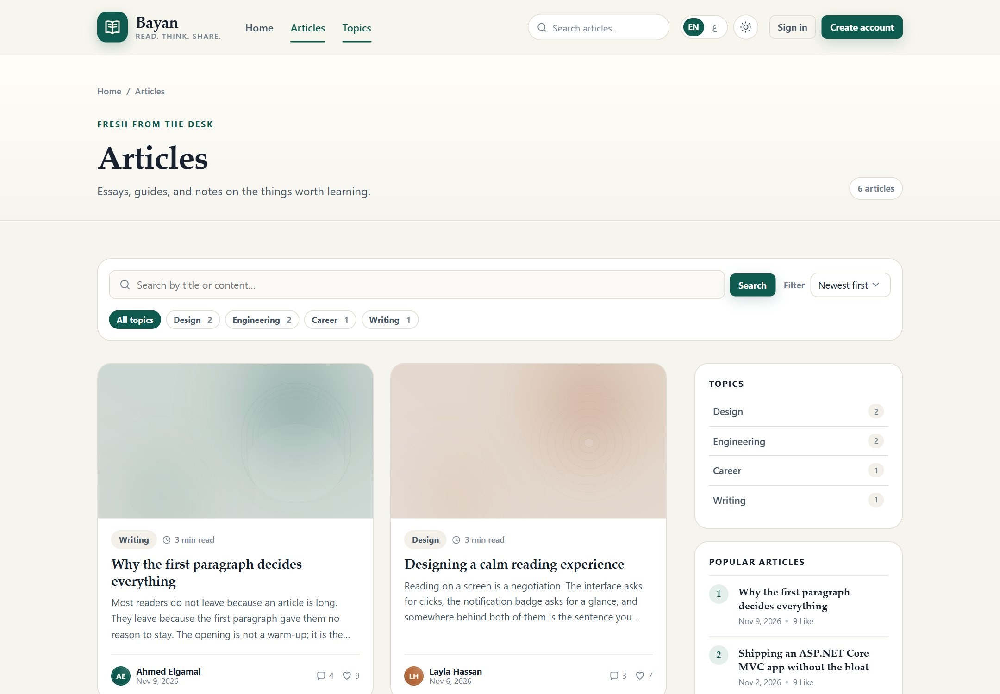
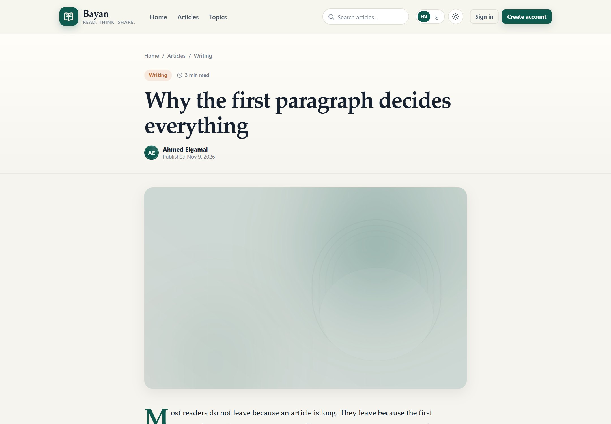
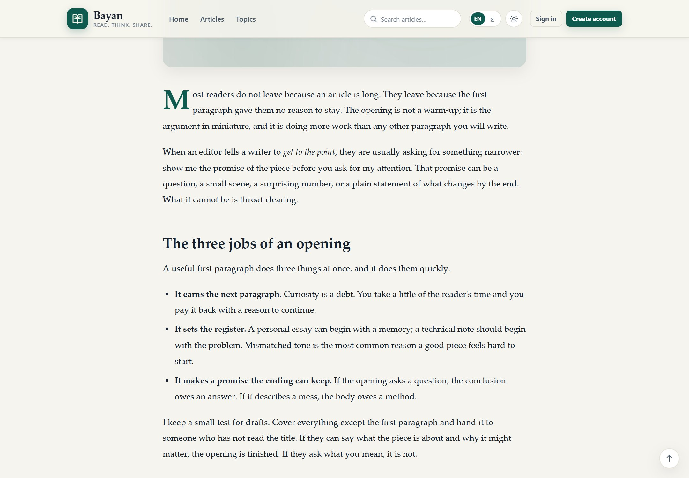
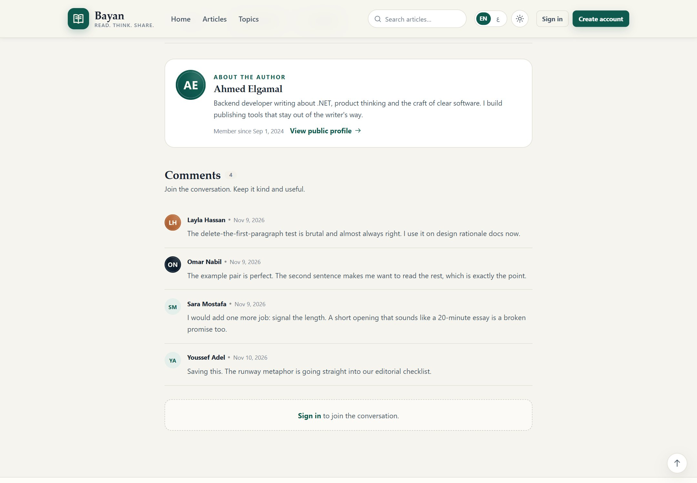
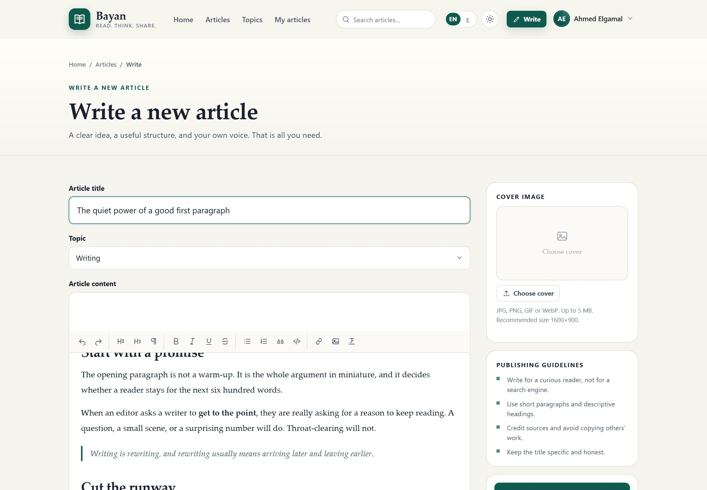
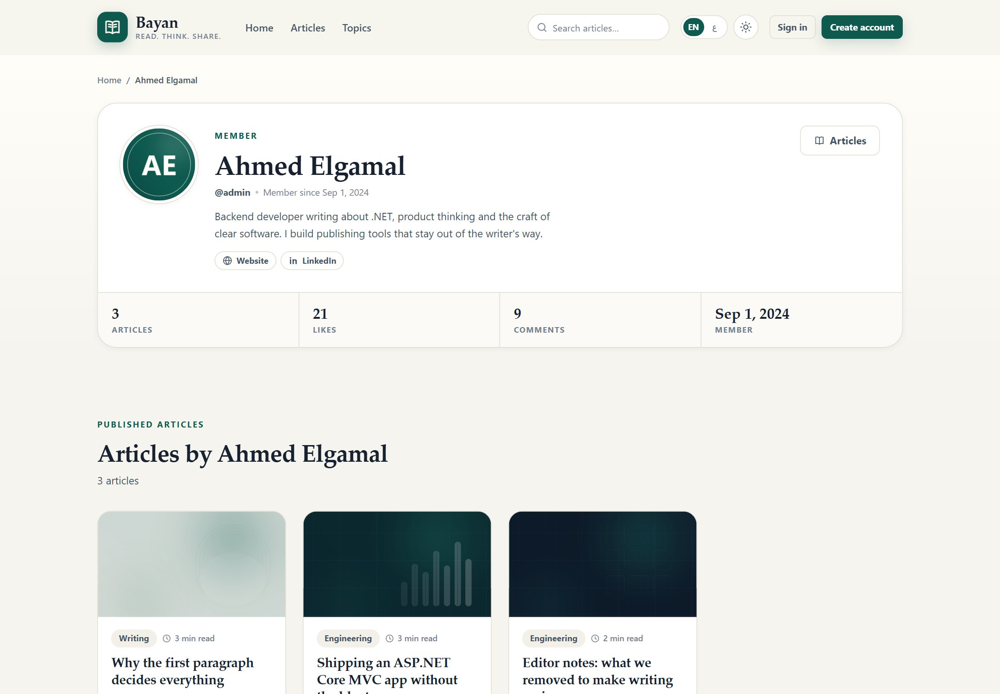
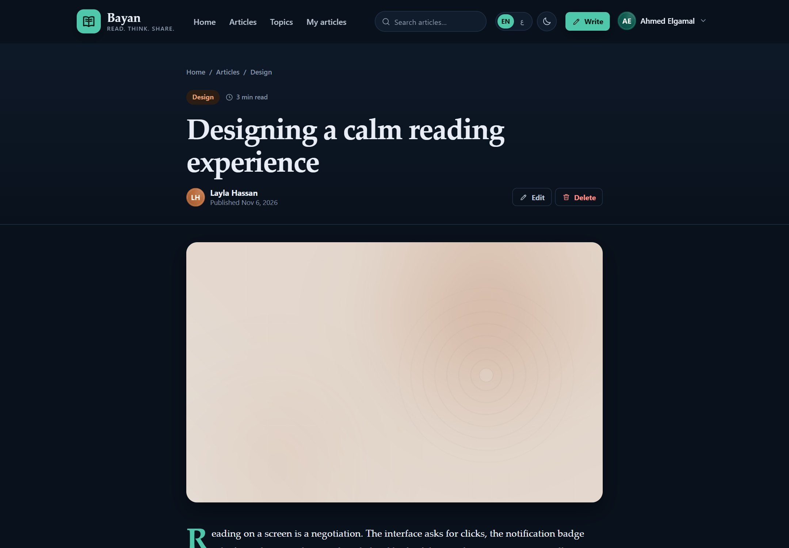
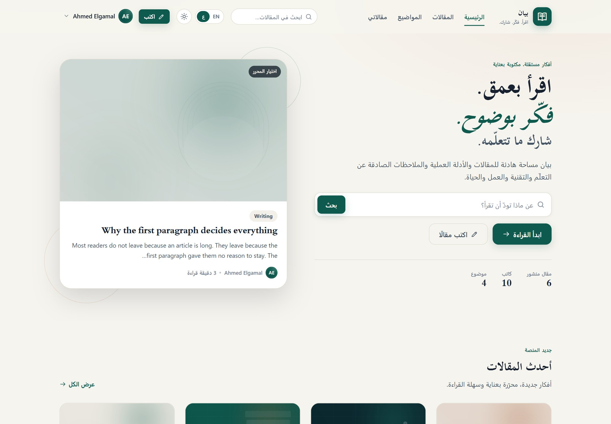
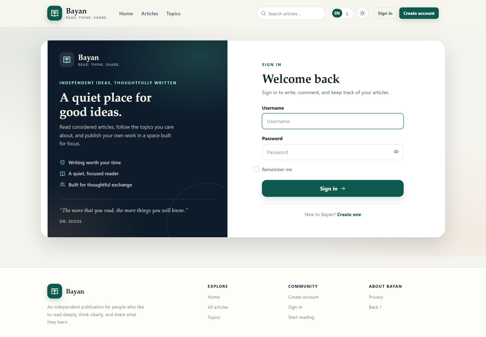

Bilingual by design
English and Arabic share one codebase. A cookie-based culture provider switches language, direction, dates and Bootstrap RTL assets.
Bayan (Arabic for eloquent expression) is a publishing platform with a distraction-free rich-text editor, comments, likes, author profiles and a complete English / Arabic experience with automatic RTL layout. This page is a guided tour of the real application running with seeded demo content.
Everything below is implemented in the repository: authentication, authoring, reading, discussion and localisation.
English and Arabic share one codebase. A cookie-based culture provider switches language, direction, dates and Bootstrap RTL assets.
A compact rich-text editor with headings, lists, quotes, links, code blocks and inline image uploads — no plugin framework.
Signed-in readers can like an article once and join the discussion. Counts are projected straight from EF Core.
Cookie authentication with Admin and User roles, custom profile fields, antiforgery tokens and per-post ownership checks.
Search titles and content, filter by topic, and sort by newest or most liked with server-side paging.
Extension, content-type and size checks plus a file-signature test. Files are stored under GUID names in allow-listed folders.
A second reading environment defined through the same design tokens, with contrast tuned for long sessions.
Every writer gets a public page with bio, links, join date and their published articles.
Mobile-first reading column, collapsible navigation and images that never overflow their container.
Captured locally against a seeded BayanDemo database — real UI, real content, no mockups.










wwwroot.Bayan is a .NET web application, so this tour uses screenshots rather than an embedded live instance. All screens were captured from the application running on a local SQL Server database seeded with the articles, comments and likes shown above. To run it yourself, clone the repository and follow the README — the app applies its EF Core migrations on first start in Development.